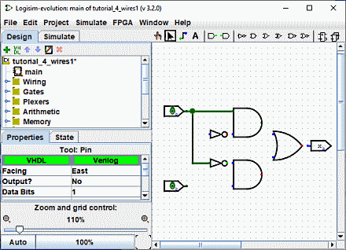

הקודם: שלב 1: הוספת שערים
שלב 2: הוספת חוטים
לאחר חסימת כל הרכיבים על הקנבס, אתה מוכן להתחיל להוסיף חוטים. בחר את "עריכה" כלי ( ). כאשר הסמן מעל נקודה
שמקבלת א
חוט, עיגול ירוק קטן יצויר סביבו. לחץ על לחצן העכבר השמאלי שם ו
גרור עד כמה שאתה רוצה שהחוט יגיע.
). כאשר הסמן מעל נקודה
שמקבלת א
חוט, עיגול ירוק קטן יצויר סביבו. לחץ על לחצן העכבר השמאלי שם ו
גרור עד כמה שאתה רוצה שהחוט יגיע.

Logisim היא די חכמה בעת הוספת חוטים: בכל פעם שחוט מסתיים בחוט אחר, Logisim אוטומטית
מחבר ביניהם. אתה יכול גם "להאריך" או "לקצר" חוט על ידי גרירת אחת מנקודות הקצה שלו באמצעות "עריכה" כלי ( ).
).
החוטים בלוגיסים חייבים להיות אופקיים או אנכיים. כדי לחבר את הקלט העליון לשער NOT ולשער AND, לאחר מכן, הוספתי שלושה חוטים שונים.

Logisim מחברת חוטים אוטומטית לשערים ואחד לשני. זה כולל ציור אוטומטי של עיגול בצומת T כמו לעיל, המציין שהחוטים מחוברים.
כאשר אתה מצייר חוטים, אתה עשוי לראות כמה חוטים כחולים או אפורים. כחול ב-Logisim מציין שהערך באותה נקודה הוא "לא ידוע", ואפור מציין שהחוט אינו מחובר לשום דבר. זה לא עניין גדול בזמן שאתה נמצא תהליך בניית המעגל. אבל עד שתסיים את זה, אף אחד מהחוטים שלך לא אמור להיות כחול או אפור. (הרגליים הלא מחוברות של שער ה-OR עדיין יהיו כחולות: זה בסדר.)
אם יש לך חוט כחול או אפור אחרי שאתה חושב שהכל צריך להיות מחובר, אז משהו קורה לא בסדר. חשוב שתחבר חוטים למקומות הנכונים. Logisim מצייר נקודות קטנות על הרכיבים לציין היכן חוטים צריכים להתחבר. ככל שתמשיך, תראה את הנקודות הופכות מכחול לבהיר או כהה ירוק.
לאחר שתחבר את כל החוטים, כל החוטים שהכנסת יהיו בעצמם בצבע ירוק בהיר או כהה.

הבא: שלב 3: הוספת טקסט